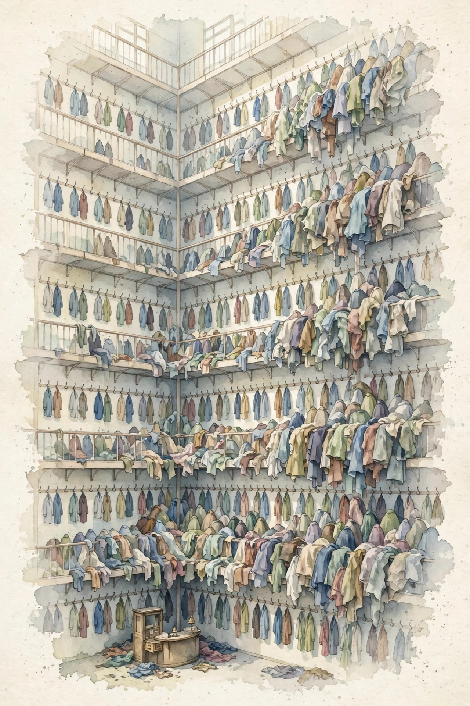

Unit 03 companion · narrated from the lesson document
Twelve concepts, one arc: the full FLOP and byte account of training and serving, then the draft-and-verify trick that buys back latency without changing the distribution.
From the lesson The idea, and every number beside it, comes from the cited section of lesson-03-accounting-speculative.md. The phrasing is the companion’s.
Illustration Invented by the companion: an analogy, a toy with made-up values, or a what-if. Never lecture content.
companion Companion voice: the idea above the tag is from the lesson. The generalization below it is the companion’s.
Provenance: no lecture transcript exists for this session. Calendar session titles anchor the lesson to Week 2, Oct 04 (Analyzing the Performance of Transformers, presented by Azalia: FLOP measurement, autoregressive generation, KV caching, speculative decoding). This page narrates the lesson document, not a video. Claim class for every lesson leaf: PLANNED / SOURCE ATTRIBUTION PENDING. Speculative decoding follows Leviathan et al. and Chen et al. (2023), taught from the papers. One internal inconsistency found during the build is disclosed on-page with recomputation (C04 prefill assert).
Section 1 · C01
From the lessonC01 §2, §3
What does one training step cost? Picture a restaurant bill with two lines. The food line is the dense work: every parameter meets every token three times, once on the way forward and twice on the way back. The tip line is attention: it scales with the square of the sequence length, so it balloons at long tables.
From the lessonC01 §4, §6
The formula is C = 6PD + 12LnTD, with D tokens arriving in sequences of length T. The dense term 6PD comes from Unit 01. The attention term per sequence per layer is 4T²n forward plus 8T²n backward, totaling 12T²n. The toy (P = 1664, D = 31, L = 2, n = 8, T = 4): 6PD = 309,504, attention = 23,808, total 333,312. Real scale (P = 7e9, D = 1e12, L = 32, n = 4096, T = 2048): 6PD = 4.2e22, attention = 3.2e21, total about 4.5e22, with attention near 7 percent.
From the lessonC01 §7, §9
At standard T the dense term rules. Near T = 6n and above, attention matters (Unit 01). The 6PD-only estimate breaks at long context: at T = 32768 with n = 4096, attention runs 1.33x the dense term, so the shortcut undercounts by 2.3x. Price both lines before training at long context.
The bill has two lines. 6PD plans the run. 12LnTD plans the long context. Cite one without the other and the budget misleads.
Section 2 · C02
From the lessonC02 §2, §3
How many FLOPs buy 100 tokens? Picture a taxi meter. Every token is one ride past the full weight set: 2P FLOPs with no backward pass, and the KV cache is the loyalty discount: nothing recomputed, only read.
From the lessonC02 §4, §6
Per token the meter reads 2P for the weights plus 4LTn for attention over the cached keys, each layer each step. The toy (P = 1664, L = 2, n = 8, cache length 5): 2 × 1664 = 3328 plus 320, totaling 3648 FLOPs per token. For 100 tokens: 364,800. Real scale (P = 7e9): 2P = 1.4e10 per token, 1.4e12 for 100 tokens. At 1e14 FLOP/s that is 14 ms of compute on paper, but decode is bandwidth-bound, so the bytes set the clock (C05).
From the lessonC02 §7, §9
Decode FLOPs are small next to the training bill. What matters is latency per token, and that follows memory traffic, not FLOPs. Fewer FLOPs do not always mean faster: an int8 model with the same 2P FLOPs but 4x fewer bytes decodes about 4x faster at batch 1. Count bytes.
decode_flops(): the attention add-on is 320 against 3328 in the toy. One rule: drop the backward.Illustration Decode meter. Enter P in billions, layers, width, cache length, and tokens. The widget applies the lesson’s decode_flops().
P (billions):
Tokens:
Section 3 · C03
From the lessonC03 §2, §3
Why does serving run out of memory at long context when the weights fit comfortably? Picture a coat check. Every token leaves two coats, its key and its value, on every floor, every layer. The ticket count multiplies guests by floors, and thousands of guests across 32 floors fill the room even though each coat is small.
From the lessonC03 §4, §6
Each token at each layer stores 2n numbers, key plus value. The total is 2 × B × T × L × n numbers, times 2 bytes in fp16, which is 4BTLn bytes. The toy (B = 1, T = 5, L = 2, n = 8): 160 numbers, 320 bytes. Real (B = 8, T = 8192, L = 32, n = 4096): 1.7e13 numbers, 34 GB in fp16. That overflows many single-GPU HBM sizes, so the cache sets the batch ceiling, not the weights.
From the lessonC03 §7, §9
The serving budget must include the cache before batch size and context length are chosen. The cache looks small until it scales: at B = 8, T = 8192 it is 34 GB against 14 GB of weights. A config that holds the weights can still OOM on the first long request when the cache was never sized.

Size the cache first. At serving scale the KV cache outweighs the weights, and it grows with every request you accept.
Section 4 · C04
From the lessonC04 §2, §3
Why does the first token take 200 ms while the rest take 20 ms each? Read the brief before the meeting. Prefill runs over all prompt tokens at once, in parallel like training. Decode speaks one token at a time afterward. A long brief plus slow speech.
From the lessonC04 §4, §6
Prefill FLOPs = T × (2P + 4LTn): the whole training-forward price, paid once on the prompt. At T = 2048 and n = 4096 the dense term dominates, compute-bound, high intensity because weights are reused T times. The toy (T = 4, P = 1664): dense term 2 × 1664 × 4 = 13,312 FLOPs plus attention. Real (P = 7e9, T = 2048): dense term 2 × 7e9 × 2048 = 2.9e13 FLOPs, about 0.3 s at 1e14 FLOP/s, compute-bound. Then decode runs at about 7 ms per token.
From the lessonC04 §5 Disclosed inconsistency. The lesson defines prefill_flops(P, L, n, T) = T * (2 * P + 4 * L * T * n) and then asserts prefill_flops(1664, 2, 8, 4) == 4 * (3328 + 1280). The function as written gives 4 × (3328 + 256) = 14,336. The assert expects 18,432. The two disagree by 4,096 FLOPs, so the assert fails on the lesson’s own code. The dense term (13,312) and the real-scale numbers are unaffected.
From the lessonC04 §7, §9
With long prompts, prefill sets time to first token. The always-fast assumption breaks at 128K: naive (128K)² scores need 32 GB per head-set, and prefill can take minutes or OOM. When the score matrix would exceed memory, chunk the prefill. Otherwise run one pass.
Section 5 · C05
From the lessonC05 §2, §3
One weight set, two phases. Why does one hunger for FLOPs while the other hungers for bytes? A lecture versus tutoring. Prefill addresses T students at once: every weight is reused T times, so intensity runs high. Decode tutors a single student: every weight is spent once, so intensity sits near 1.
From the lessonC05 §4, §6
Prefill intensity sits near T FLOP/byte in fp16. Decode intensity sits near B at batch B, so near 1 at batch 1. On the toy ridge of 150: prefill at T = 2048 gives I near 2048, compute-bound. Decode at batch 1 gives I near 1, memory-bound, ceiling 2e12 FLOP/s. The split between prefill and decode is the axis the serving design turns on. Tune prefill for compute, decode for bandwidth.
From the lessonC05 §7, §9
The assumption that decode is always bandwidth-bound breaks at large batch: at batch 512, I near 512 passes the ridge and decode turns compute-bound. Extra bandwidth then buys nothing. Check the batch size first. The falsifiable extension: sweep batch for decode and plot tokens/s. Expect a linear rise then a flat line, with the knee near B = ridge.
Prefill wants FLOPs, decode wants bytes. A single optimization cannot serve both.
Section 6 · C06
From the lessonC06 §2, §3
One batch of 8 serves eight times the users. Does each of them wait longer? A bus versus a taxi. The bus carries many at a lower cost per rider, but every rider waits for boarding. The taxi departs at once. Pick the vehicle per the SLA.
From the lessonC06 §4, §6
At batch B, decode reads the weights once and spends them B times. Traffic per token across the batch: 2P plus B times the cache read. The toy: batch 1 gives 50 tok/s at 20 ms per token. Batch 8 gives 296 tok/s total, 37 tok/s per request, 27 ms per token. Batching multiplies intensity by about B, lifts throughput, and usually lifts latency.
From the lessonC06 §7, §9
Batching is the cheapest way to buy throughput. The price is latency plus KV-cache memory, and C03 caps B. The assumption that batching always helps breaks past the compute roof: batch 1024 at the roof gives the same tokens/s as 512 with double the wait. Find the knee. Use static batching for uniform requests, continuous batching (Unit 08) for varied lengths.
Illustration Batch planner. Enter B. The widget applies the lesson’s toy batch_model() (20 ms base).
Batch size:
Batching is the cheapest throughput lever, and the knee is the whole game. Past the compute roof it buys latency with no throughput.
Section 7 · C07
From the lessonC07 §2, §3
Could a tiny quick model handle the typing while the flagship only proofreads? That is the intern and the editor. The intern, the draft model, types out gamma words at speed. The editor, the target model, reads the whole batch at once and keeps what is good. Reading runs in parallel, so grading 5 words costs barely more than grading 1.
From the lessonC07 §4, §6
The draft q is a small model with cost ratio c = t_draft / t_target per token, with c much less than 1. Gamma is the tokens proposed per round. The target p checks gamma tokens in a single parallel pass, one prefill-like step covering gamma tokens. For acceptance rate a, the expected accepted tokens are E[k] = (1 − a^(gamma+1)) / (1 − a). Wall-clock per token runs about (gamma × c + 1) / E[k] target-steps.
From the lessonC07 §7, §9
The toy: c = 0.05, gamma = 5, a = 0.8. E[k] = (1 − 0.8^6) / 0.2 = 3.69. Cost per round: 5 × 0.05 + 1 = 1.25. Per token: 1.25 / 3.69 = 0.34 target-steps. Speedup about 2.9x. Both models must share the tokenizer. The failure case: a slow draft (c near 0.5) or low acceptance (a near 0.3) loses to plain decode. At c = 0.5, gamma = 5, a = 0.3: E[k] = 1.42, cost 3.5, per token 2.46x slower than baseline. Price a and c before anything else.
Illustration Speculative planner. Enter acceptance a, gamma, and cost ratio c. The widget applies the lesson’s expected_accepted() and speedup().
Acceptance a:
Gamma:
Cost ratio c:
Price the bet with measured a and c before serving a single request. A slow draft or low acceptance turns the speedup negative, and the formula warns you in advance.
Section 8 · C08
From the lessonC08 §2, §3, §4, §6
Checking 5 tokens sounds like 5 steps, but it is 1. Think of a quiz: sitting it is serial work, one answer at a time, while grading it is parallel, every answer on the desk at once. The target scores the gamma drafts in a single forward pass because the draft tokens are already known, which makes the pass read like a prefill. The verification input is (B, gamma, n) tokens, and one pass yields p(x_i | prefix, drafts before i) for every i, including the bonus position. The FLOP count is about gamma × 2P, but intensity near gamma keeps it compute-bound, so the wall clock reads about 1 step. The toy: gamma = 5, verification time about 1.2 target steps, not 5. The lesson models it as 1 + 0.05 × gamma.
From the lessonC08 §7, §9
Verification is O(gamma) FLOPs but O(1) steps, and latency counts steps. The exactly-1-step assumption breaks at large gamma: the pass turns compute-heavy and exceeds 1 step. At gamma = 50 and long context the verification pass itself drags. Model verification as 1 + slope × gamma, and measure the slope.
Verification spends O(gamma) FLOPs but only O(1) steps. Latency counts steps, so the FLOP count misleads and the step count decides.
Section 9 · C09
From the lessonC09 §2, §3
The draft offers “cat” while the target prefers “dog”. Which one wins, and with what probability? Picture the bouncer with his coin. The draft’s guest arrives carrying confidence q. The bouncer, the target, waves them in with probability min(1, p/q). Turned-away guests give way to a draw from what is left over: p − q clipped at 0, renormalized.
From the lessonC09 §4, §6
Accept x_i with probability min(1, p(x_i)/q(x_i)). On the first rejection at position i, sample x_i from norm(max(0, p − q)). Everything after a rejection is discarded. The proof sketch: P(accept x) = q(x) × min(1, p(x)/q(x)) = min(q(x), p(x)). The leftover mass p(x) − min(q(x), p(x)) = max(0, p(x) − q(x)) is picked up by the resample. Total: p(x). The toy: q(cat) = 0.7, p(cat) = 0.2, so the accept probability is 0.2/0.7 = 0.286.
From the lessonC09 §7, §9
The residual sampling costs O(V) per position, tiny beside model FLOPs. The rare-rejection assumption breaks with a weak draft: most tokens get rejected and each round produces about 1 token at cost gamma × c + 1, slower than baseline. Monitor the acceptance rate in production. Greedy accept works when only the argmax matters. Use the full rule when the distribution must survive.
Illustration Bouncer calculator. Enter p(x) and q(x). The widget applies the lesson’s accept probability.
p(x):
q(x):
Accepted tokens follow p exactly. The bouncer’s coin plus the resample draw form an exact identity, not an approximation.
Section 10 · C10
From the lessonC10 §2, §3
Does speculative decoding give “almost the same” or “exactly the same” as the target? Think photocopy, not sketch. Rejection sampling is exact by proof: the output tokens match p exactly, not approximately. The fine print has two lines: same tokenizer, plus exact resample math.
From the lessonC10 §4, §6
Two assumptions. A1: draft and target use one shared vocabulary and tokenization, so their supports match. A2: the resample distribution is norm(max(0, p − q)), computed exactly. Then the output distribution equals p, exactly. From C09: accepted mass per token is min(q, p), resample mass is max(0, p − q), and the sum is p. After a full round, the bonus token is drawn from p directly. Each emitted token follows p. Nothing is approximated.
From the lessonC10 §7, §9
Exactness costs nothing in compute: the innocent-looking sampling code is exactly right. The cost is comprehension, not cycles. The breaking case is different tokenizers: if the draft cuts “cat” as one token and the target cuts it as two, the two distributions live in different spaces and the proof collapses. Mismatched vocabs produce garbage or crashes.
One shared vocabulary carries the whole proof. Two tokenizers mean two different spaces, and the identity voids.
Section 11 · C11
From the lessonC11 §2, §3
The draft lands 80 percent of its tokens. How many tokens does a round produce? Picture a free-throw streak. Every draft token is one attempt, made with probability a. The streak ends at the first miss, with one bonus token after a full round. Expected makes follow the geometric series: E[k] = (1 − a^(gamma+1)) / (1 − a).
From the lessonC11 §4, §6
The toy: a = 0.8, gamma = 5. Then 0.8^6 = 0.262144, so E[k] = (1 − 0.262144) / 0.2 = 3.689. A realistic case: a = 0.6, gamma = 4 gives E[k] = 2.31. As a approaches 1, the yield approaches gamma + 1. The main lever is a: E[k] bends concave in a, so the gains pile up near 1.
From the lessonC11 §7, §9
The constant-a assumption breaks in practice: real acceptance falls with position because later drafts condition on earlier drafts. Measured 2.1 against a formula 3.7 is the signature of falling per-position acceptance. Fit a_i per position instead of one global a.
Past a point, a better draft beats a faster draft. The concave curve decides where the next unit of effort goes.
Section 12 · C12
From the lessonC12 §2, §3
A draft at 5 percent cost, 80 percent acceptance, gamma 5. Win or lose? A bet with known odds. Each round costs gamma × c + 1 and yields E[k] tokens. The bet wins when the round cost stays below the yield E[k]. The formula is the odds table: price a and c before betting.
From the lessonC12 §4, §6
Speedup = E[k] / (gamma × c + 1). Break-even sits at E[k] = gamma × c + 1. The toy: 3.689 / 1.25 = 2.95x. The bad case: a = 0.3, c = 0.5, gamma = 5 gives E[k] = 1.42, cost 3.5, speedup 0.41x, a 2.4x slowdown. Measure the tradeoff in target-steps per token. At batch 1, FLOPs and memory are secondary.
From the lessonC12 §7, §9
The assumption that speculative decoding always helps breaks on low a or high c. The honest workflow prices a on your own workload first, then decides. Pick speculative decoding when latency must fall without quality loss, quantization when bandwidth is the constraint, batching when throughput is the target. With a free draft (c = 0), speedup equals E[k], and the best gamma grows without bound toward 1/(1 − a).
Pay the round cost only when it stays below the yield. Price a on your workload, then decide. Never the reverse.
Section 13 · Synthesis
From the lessonC01 to C12
The arc, end to end. Training prices 6PD plus 12LnTD, and the second term takes over at long context (C01). Decode prices 2P per token plus a small attention add-on, and the bytes set the clock (C02). The KV cache is 4BTLn bytes, and at serving scale it outweighs the weights (C03). Prefill is one parallel pass that builds the cache, and decode is the slow speech after (C04). Prefill is compute-bound, decode is bandwidth-bound, and the split steers the serving design (C05). Batching shares one weight read across B requests until the roof (C06). Then the trick: a small draft types gamma tokens while the target grades them in one parallel pass (C07, C08). The bouncer admits each draft with probability min(1, p/q) and resamples the rest, so the output lands exactly on p (C09, C10). The yield is the geometric sum E[k] (C11). The bet wins when the round cost (gamma × c + 1) stays below the yield E[k] (C12).
From the lessonUnit chapter plate
The unit chapter plate states the tradeoff in one line: “Count the bytes per token. Then buy back latency.” The role bridge: the research engineer runs the speedup formula and its break-even before any speculative serving work. The LLM engineer designs the stack on the prefill and decode intensity split. The FDE carries the latency tradeoff as the stakeholder answer: the conditions where the bet wins and where it loses. One disclosure stands on this page: the C04 prefill assert disagrees with its own function by 4,096 FLOPs, recomputed above.
Wisdom index
Each nugget states the idea in plain words, why it matters, and the transferable principle. Every one is anchored to its lesson section.